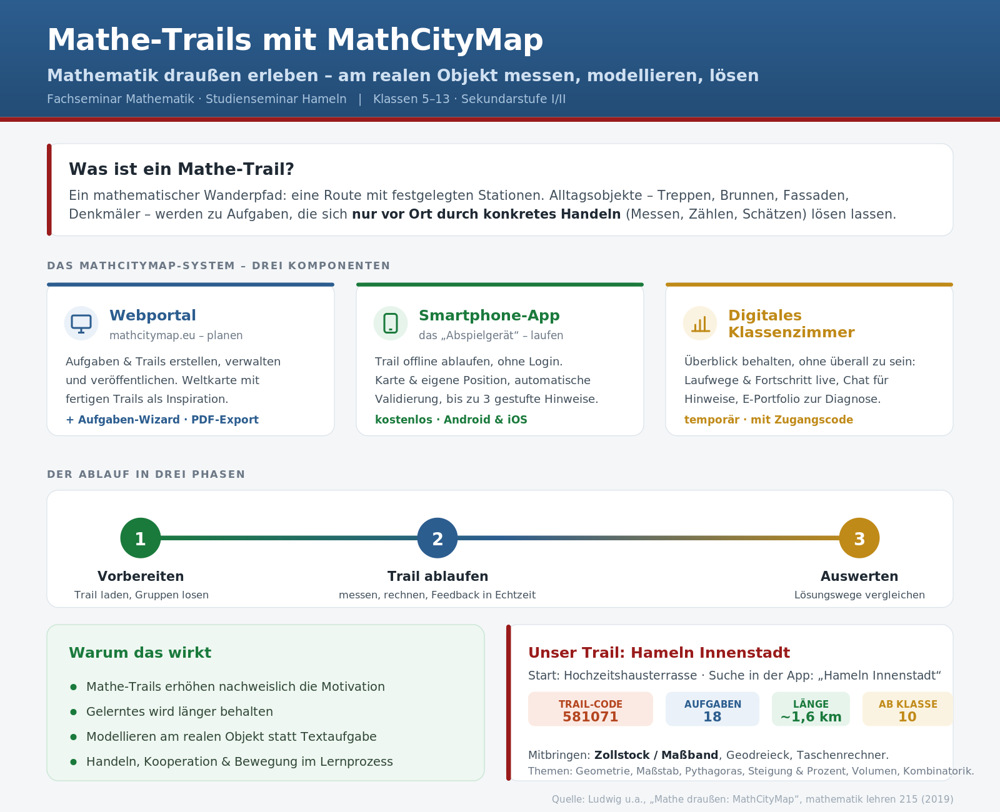

Mathematik draußen erleben
Ein Mathe-Trail macht die Stadt zum Aufgabenheft: An Treppen, Brunnen und Fassaden wird gemessen, geschätzt und modelliert – Mathematik, die sich nur vor Ort lösen lässt. Diese Handreichung zeigt, warum das wirkt, wie das MathCityMap-System die Organisation trägt und worauf es bei der Durchführung ankommt.
Mathematik draußen erleben
Das MathCityMap-System, der Ablauf in drei Phasen und unser Trail – als Infografik.

Warum Mathe-Trails?
„Mathematik in Umwelt und Realität erleben" – das ist das Versprechen sogenannter MathTrails, mathematischer Wanderpfade. Entlang einer Route mit festgelegten Orten werden Alltagsobjekte zu Aufgaben, an denen mathematische Problemstellungen entdeckt und gelöst werden. Der Reiz liegt darin, dass diese Aufgaben sich nur vor Ort und nur durch konkretes Handeln – Messen, Zählen, Schätzen – lösen lassen. Die Mathematik verlässt das Heft und wird an einem realen Objekt erfahrbar.
Die didaktische Begründung ist empirisch gestützt. Das Ablaufen von MathTrails erhöht nachweislich die Motivation der Lernenden (Cahyono 2018), und das Gelernte wird länger behalten (Zender 2018). Hinzu kommt der modellierungsdidaktische Kern: Statt eingekleideter Textaufgaben steht ein echtes Objekt im Mittelpunkt, das gemessen, idealisiert und mathematisiert werden muss. Lernende durchlaufen so den vollständigen Modellierungskreislauf am realen Gegenstand (Gurjanow u. a. 2019).
Die Kernidee: Nicht die Aufgabe kommt zu den Lernenden, sondern die Lernenden gehen zur Mathematik. Das Objekt liefert keine fertigen Zahlen – die müssen erst durch eine Aktivität erhoben werden. Genau das macht den Unterschied zur Schulbuchaufgabe.
Der praktische Preis dieses Ansatzes war lange hoch: Einen analogen MathTrail vorzubereiten – Objekte finden, Aufgaben formulieren, Lösungen und Hilfen erstellen, Begleitmaterial drucken – ist aufwendig, weshalb die Methode selten genutzt wurde. Genau hier setzt MathCityMap an: Das System reduziert diesen Aufwand und erhöht zugleich die inhaltliche und didaktische Qualität der Trail-Aufgaben.
Was ein Mathe-Trail ausmacht
Eine MathCityMap-Aufgabe besteht aus einem Aufgabentext zu einem Objekt, einem Foto des Objekts, einer Musterlösung und gestuften Hinweisen; angegeben werden außerdem Klassenstufe und nötige Hilfsmittel (etwa Zollstock oder Taschenrechner). Damit eine Aufgabe öffentlich geschaltet wird, muss sie zwei Bedingungen erfüllen – und genau diese beiden Bedingungen sind das didaktische Gütesiegel eines Mathe-Trails:
Nur vor Ort lösbar
Aufgabentext und Foto allein reichen für eine Lösung nicht aus. Die Aufgabe ist an das konkrete Objekt und seinen Standort gebunden – wer nicht da ist, kann sie nicht lösen.
Mit einer Aktivität verbunden
Die Lösung erfordert ein eigenes Tun vor Ort – Messen, Zählen, Schätzen. Erst die erhobenen Daten machen die Mathematik möglich; das verbindet Handlung und Begriff.
Ein Trail entsteht durch Kombination mehrerer solcher Aufgaben, die räumlich sinnvoll – also nicht zu weit voneinander entfernt – angeordnet werden. Eine Route besteht aus mindestens vier Aufgaben. So wird aus einzelnen Objekten ein zusammenhängender Wanderpfad mit eigener Dramaturgie.
Das MathCityMap-System
MathCityMap (MCM) ist ein Projekt der Goethe-Universität Frankfurt (IDMI) mit internationalen Partnern. Es besteht aus drei Komponenten, die zusammenspielen: ein Webportal zum Planen, eine App zum Ablaufen und das Digitale Klassenzimmer zum Begleiten.
Webportal
Aufgaben und Trails strukturiert anlegen, verwalten und veröffentlichen. Eine Weltkarte zeigt fertige Trails als Inspiration; per PDF-Export entstehen Aufgaben- und Lösungs-Guides.
Smartphone-App
Trails werden vorab heruntergeladen und offline ohne Registrierung abgelaufen: Karte und eigene Position, automatische Antwortvalidierung, bis zu drei gestufte Hinweise pro Aufgabe.
Digitales Klassenzimmer
Eine temporäre Umgebung, in der die Lehrkraft Fortschritt und Standort verfolgt, per Chat differenziert und über das E-Portfolio Lösungen einsieht.
Gute Trail-Aufgaben – und der Aufgaben-Wizard
Wie entstehen Aufgaben, die mathematisch tragen und sich vor Ort lösen lassen?
Die Vorbereitung beginnt mit Kreativität bei der Objektsuche: In jeder Stadt gibt es Treppen, Rampen, Gebäude, Brunnen – immer wiederkehrende Objekte, an denen man aktiv Mathematik betreiben kann. Für solche Objekte hält das Portal „Generic Tasks" (Blaupausenaufgaben) bereit: didaktisch ausgearbeitete Vorlagen zu Kombinatorik, Algebra/Funktionen und Geometrie. Sie übertragen eine Aufgabenidee auf ein häufiges Setting, sodass nur noch das Objekt (Foto und Ort) ausgetauscht und die Messwerte erhoben werden müssen.
Der Aufgaben-Wizard macht daraus eine fertige Aufgabe „wie von Zauberhand": Man wählt eine von rund 20 Vorlagen, trägt die erhobenen Messwerte ein – und Musterlösung sowie Hinweise (teils mit Bild) werden automatisch generiert. Das Musterbeispiel ist die Geschwindigkeit einer Rolltreppe: Europäische Rolltreppen haben genormte Geschwindigkeiten (EN 115), Zeit und Länge genügen, um den Geschwindigkeitsbegriff im Wortsinn er-fahrbar zu machen. Alle automatisch erzeugten Inhalte lassen sich an die eigene Lerngruppe anpassen.
Für die Antwort stehen vier Formate bereit – ihre Wahl ist selbst eine didaktische Entscheidung:
| Format | Wann sinnvoll |
|---|---|
| Intervall | Mess- und Modellierungsaufgaben: Kleine Ungenauigkeiten beim Messen oder Idealisieren sollen nicht zu „falsch" führen. Das wichtigste Format im Trail. |
| Exakte Zahl | Wenn ein eindeutiger Zahlwert existiert, z. B. bei kombinatorischen Fragestellungen. |
| Multiple-Choice | Wenn Antwortoptionen das Denken strukturieren oder typische Fehlvorstellungen sichtbar machen sollen. |
| GPS-Koordinaten | In Anlehnung an Geocaching: etwa „der Punkt mit gleichem Abstand zu zwei Landmarken" oder das Abstecken eines gleichseitigen Dreiecks im Park. |
Merkregel: Wo gemessen wird, gehört ein Intervall hin. Verlangen Sie bei Mess- und Modellierungsaufgaben keine exakte Zahl – sonst bestrafen Sie unvermeidbare Messungenauigkeit statt mathematisches Denken.
Das Digitale Klassenzimmer
Die größte Herausforderung beim Trail mit einer Klasse ist es, den Überblick zu behalten: Ähnlich wie beim Stationenlernen verteilen sich die Kleingruppen über das Gebiet und beginnen an verschiedenen Stellen. Die Lehrkraft kann unmöglich überall gleichzeitig sein. Das Digitale Klassenzimmer ist die Antwort – eine temporäre pädagogische Umgebung, die man im Webportal mit Start- und Endzeitpunkt anlegt; das System erzeugt dazu einen Zugangscode, mit dem die Gruppen den Trail laden.
Während der Trail läuft, stehen der Lehrkraft drei Funktionen für Klassenmanagement und Diagnose zur Verfügung:
- Chat als Instruktionskanal – Anweisungen oder differenzierte Hilfen in Echtzeit, an alle oder an einzelne Gruppen; Lernende können Hilfe anfordern oder Teil-Lösungen (z. B. Messwerte) validieren lassen.
- Laufwege-Tool – zeigt, an welcher Aufgabe jede Gruppe gerade arbeitet und welchen Pfad sie genommen hat. Stauen sich Gruppen an einer Station, sieht man das sofort und kann per Rundnachricht reagieren – pädagogische Kontrolle, ohne physisch vor Ort zu sein.
- E-Portfolio – sammelt je Gruppe Fortschritt, genutzte Hinweise und gegebene Antworten. Diese Informationen dienen der Diagnose und fließen in die weitere Unterrichtsplanung ein.
Für die Auswertung: Mit den PDF-Guides und dem E-Portfolio lassen sich in der Folgestunde gezielt verschiedene Lösungswege vergleichen und Fragen klären. Der Trail endet nicht an der letzten Station, sondern in der mathematischen Besprechung im Klassenraum.
Die Trail-Stunde, Phase für Phase
Ein Trail-Ablauf braucht mindestens zwei Unterrichtsstunden. Die folgende Skizze trennt die drei Phasen und macht sichtbar, wo die didaktische Arbeit liegt – nämlich vorn (gute Aufgaben, klare Organisation) und hinten (gemeinsame Auswertung), nicht im Hinterherlaufen während des Trails.
| Phase | Was Sie tun | Wozu |
|---|---|---|
| Vorbereiten | Trail und Karten in der App laden, Kleingruppen (2–4) bilden, Digitales Klassenzimmer mit Code öffnen, Hilfsmittel verteilen | Reibungslosen Start sichern, Überblick technisch vorbereiten |
| Einweisen | Regeln, Treffpunkt und Zeitfenster klären; Gruppen an verschiedenen Startstationen beginnen lassen | Staus vermeiden, Sicherheit und Selbstständigkeit |
| Trailen | Gruppen messen, rechnen, geben Lösungen ein; Sie verfolgen Laufwege und helfen per Chat gestuft | Aktives Mathematisieren am Objekt, gezielte Differenzierung |
| Auswerten | In der Folgestunde Lösungswege aus E-Portfolio/PDF-Guide vergleichen, Fehler und Modellannahmen besprechen | Vom Erlebnis zur gesicherten Mathematik |
Die App übernimmt unterwegs viel: Sie zeigt Positionen, präsentiert Aufgaben mit Bild, gibt auf Anfrage gestufte Hinweise und färbt die Pins nach Feedback ein. Dadurch werden Sie als Lehrkraft frei für das, was nur Sie leisten können – beobachten, diagnostizieren und gezielt unterstützen.
Organisation, Sicherheit und Differenzierung
Ein Mathe-Trail findet im öffentlichen Raum statt – das verlangt organisatorische Sorgfalt. Einige bewährte Hinweise aus der Praxis:
- Geschützte Umgebungen wählen. Trails sollten in Parks, Fußgängerzonen oder an Uferpromenaden liegen – verkehrsarm und überschaubar.
- Jahrgangsstufe beachten. Für die Aufsicht sind höhere Jahrgänge ab Klasse 8 einfacher zu handhaben. Mit jüngeren Klassen (5/6) gelingt es ebenfalls – bewährt hat sich, dass Oberstufenschüler die Aufgaben erstellen und die Lehrkraft bei der Betreuung unterstützen.
- Hilfsmittel mitführen. Je nach Aufgaben Zollstock oder Maßband, Geodreieck und Taschenrechner – die Aufgaben nennen ihren Bedarf.
- Gruppen klein halten. Kleingruppen zu zwei bis vier sorgen dafür, dass alle messen und mitrechnen, statt zuzusehen.
Dass die Methode trägt, ist breit erprobt: Im System wurden bereits Tausende Aufgaben in über tausend Trails von einer großen Community engagierter Nutzer angelegt – „Sharing is caring": Öffentliche Aufgaben anderer lassen sich mit eigenen zu einem neuen Trail kombinieren.
Unser Trail heute: Hameln Innenstadt
Für unsere Sitzung laufen wir den Trail durch die Hamelner Innenstadt selbst ab – einmal die Perspektive der Lernenden einnehmen, mit Smartphone, Maßband und der Frage, wie sich ein Objekt mathematisieren lässt. So erleben Sie unmittelbar, was die App leistet und wo die didaktischen Stellschrauben liegen.
So finden Sie den Trail
In der MathCityMap-App über die Suche „Hameln Innenstadt" oder direkt über den Trail-Code. Treffpunkt und Start ist die Hochzeitshausterrasse (Osterstraße 2, zwischen Marktkirche und Hochzeitshaus). Bringen Sie nach Möglichkeit einen Zollstock oder ein Maßband mit – im Trail wird gemessen.
Themenfelder u. a.: Geometrie und Winkel, Maßstab und Verkleinerung, Kombinatorik, Pythagoras und Diagonalen, Steigung und Prozent, Volumen am Quader, Schätzen und Überschlagen.
Der Trail ist ab Klasse 10 ausgewiesen – ein guter Anlass, beim Ablaufen mitzudenken, welche Aufgaben sich mit gestuften Hinweisen oder angepassten Intervallen auch für frühere Jahrgänge öffnen ließen.
Häufige Sorgen beim Einstieg
Ein paar ehrliche Antworten auf die Fragen, die vor dem ersten eigenen Trail fast immer auftauchen – zum Aufklappen.
„Muss jede Schülerin und jeder Schüler ein Smartphone haben?"
Nein. Gearbeitet wird in Kleingruppen zu zwei bis vier – ein Gerät pro Gruppe genügt, und das fördert sogar die Aushandlung. Die App läuft offline ohne Account; nur das Digitale Klassenzimmer (Chat, Live-Laufwege) braucht eine mobile Verbindung.
„Einen eigenen Trail zu bauen ist mir zu aufwendig."
Für den Einstieg müssen Sie gar nichts bauen: Über die Weltkarte und die App-Suche finden Sie fertige, öffentliche Trails – wie unseren in Hameln. Wollen Sie später selbst Aufgaben anlegen, nimmt Ihnen der Aufgaben-Wizard mit seinen Vorlagen den Großteil der Arbeit ab; oft genügt das Eintragen weniger Messwerte.
„Verliere ich nicht den Überblick, wenn sich alle verteilen?"
Genau dafür gibt es das Digitale Klassenzimmer. Das Laufwege-Tool zeigt in Echtzeit, wo jede Gruppe steht und woran sie arbeitet; per Chat steuern Sie nach. Sie behalten die pädagogische Kontrolle, ohne an jeder Station zu sein.
„Was, wenn beim Messen ungenau gearbeitet wird?"
Das ist eingeplant. Mess- und Modellierungsaufgaben nutzen das Antwortformat Intervall: Kleine Ungenauigkeiten führen nicht zu „falsch". Im Gegenteil – die Frage, wie genau man überhaupt messen kann und welche Modellannahmen man trifft, ist selbst wertvoller Lernstoff für die Auswertung.
„Ist das nicht eher Ausflug als Mathematikunterricht?"
Der Unterschied entscheidet sich in der Vor- und Nachbereitung. Eine gute Trail-Aufgabe verlangt echtes Mathematisieren am Objekt, und die Auswertung im Klassenraum – Lösungswege vergleichen, Modelle prüfen – hebt das Erlebnis auf die fachliche Ebene. Motivation und Behaltensleistung sprechen empirisch klar für die Methode.
Der rote Faden in einem Satz
Ein Mathe-Trail bringt die Lernenden zur Mathematik im realen Raum: An echten Objekten wird gemessen, geschätzt und modelliert, und das MathCityMap-System trägt die Organisation – das Webportal zum Planen, die App zum Ablaufen, das Digitale Klassenzimmer zum Begleiten und Diagnostizieren. So wird aus einem aufwendigen Sonderprojekt eine wiederholbare, motivierende und nachhaltige Unterrichtsform.